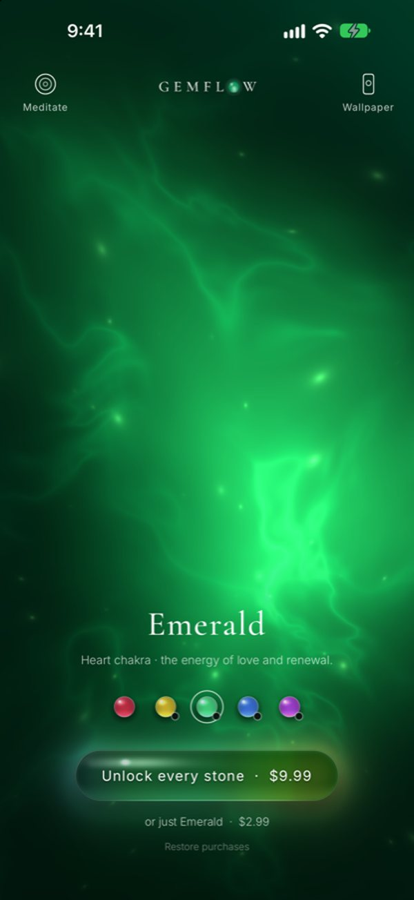

Frequencies · 639 Hz
639 Hz: the frequency of love and connection
When your heart has quietly closed its doors, 639 Hz is the tone many turn to. At the centre of the Solfeggio scale, it belongs to the heart chakra and the green light of emerald. Here is what it means, a simple ritual, and how to listen.
Where 639 Hz sits among the Solfeggio tones
The full list of nine, with where each came from: Solfeggio frequencies explained.
| Hz | Syllable* | Gemflow stone |
|---|---|---|
| 396 | Ut | Ruby · root |
| 417 | Re | — |
| 528 | Mi | Citrine · solar plexus |
| 639 | Fa | Emerald · heart |
| 741 | Sol | Sapphire · throat |
| 852 | La | — |
| 963 | later | Amethyst · crown |
* Syllables as assigned by Horowitz (1999). 963 Hz was added to the list later. Chakra pairings are the common modern ones and vary between sources.
The calling
When your heart feels closed
Sometimes the heart quietly shuts its doors. After a loss, a disappointment, or simply too many days of holding everything together, it becomes hard to let love in, or to give it. 639 Hz is the tone many people turn to in those moments. It sits in the middle of the Solfeggio scale, a warm, open note that seems to soften whatever it touches.
The heart
The heart chakra and the green light
In the chakra tradition, the heart is the centre of the seven, the bridge between the body below and the spirit above. It is the place of love, compassion and forgiveness, for others and for yourself. Today its colour is green, the colour of new leaves and of things beginning again. 639 Hz is the tone traditionally paired with it: a sound for opening, gently, from the inside.
The meaning
Connection and harmony
In the Solfeggio tradition, 639 Hz carries the meaning of connection: harmony in relationships, understanding, and the quiet mending of old hurts between people. Many who listen describe a warmth spreading through the chest, a loosening of resentment, a sense of being less alone. It is often chosen before a difficult conversation, after a breakup, or simply when you want to feel close to someone again, including yourself.
The ritual
A 639 Hz heart-opening meditation
Sit comfortably and rest one hand over your heart. Play 639 Hz softly. Breathe in and imagine a clear green light glowing beneath your palm; breathe out and let it widen, a little more with each breath, until it fills your chest. Bring to mind someone you love, then someone you are struggling to forgive, then yourself, and send the light to each. Stay for ten minutes.
Gentle care
Listening gently
Keep the tone soft, low enough that you could speak over it, beneath music, singing bowls or rain if you like. Sound guidelines suggest keeping personal audio around 80 decibels or lower.
Source: WHO–ITU, Global standard for safe listening devices and systems (H.870, 2019)
How to listen
What does 639 Hz sound like?
Warm and rounded, between the E♭ and E an octave above middle C: a gentle, singing tone, neither low nor bright. Most people let it float quietly beneath guqin, piano, singing bowls or rain, and let it carry them inward.
639 Hz in Gemflow
Emerald: the 639 Hz stone

Emerald in the Gemflow app. The light is rendered live, not a video.
In Gemflow, 639 Hz belongs to emerald: a living green light on your phone that moves when you touch it and breathes with you. Open Meditate, and the stone glows and softens with each breath while 639 Hz sits quietly beneath guqin and singing bowls. A small daily ritual for opening your heart again. More about the stone: emerald, the heart chakra stone; and why the heart chakra has been red, gold, green and pink: which stone belongs to the heart chakra. Gemflow is a space for stillness, not a medical product.
Questions
What is 639 Hz?
A sound that vibrates 639 times a second, between E♭5 and E5. It is one of the six original Solfeggio frequencies.
What is 639 Hz used for?
People use it as a calm tone for meditation, often with the heart chakra in mind. Horowitz’s 1999 list labels it “connecting” or “relationships”; that is a tradition, not a research finding.
What chakra is 639 Hz?
Most lists pair 639 Hz with the heart chakra, in the centre of the chest, today usually shown as green.
What note is 639 Hz?
No exact note. In standard tuning (A = 440 Hz) it sits between E♭5 (622 Hz) and E5 (659 Hz), about 46 cents above E♭5.
Does 639 Hz work?
We found no study of 639 Hz itself. Calm sound and slow breathing help many people relax; there is no evidence that the tone improves relationships.
Which crystal goes with 639 Hz?
In Gemflow, 639 Hz belongs to emerald, the green stone of the heart chakra.
Sources
- Leonard G. Horowitz, Healing Codes for the Biological Apocalypse (Tetrahedron, 1999).
- WHO–ITU, Global standard for safe listening devices and systems, ITU-T H.870 (2019).
© 2026 Gemflow · Home · Solfeggio frequencies · 396 Hz · 528 Hz · 639 Hz · 741 Hz · 963 Hz · Chakra stones and frequencies · Ruby · Citrine · Emerald · Sapphire · Amethyst · Privacy